ROOFDAY
ISSUE 01
우리는 같은 음악을 듣고
2022–2026, 음악 일기 44트랙
글과 그림 @theroofday
▶ 전곡 들으며 읽기
옆으로 넘겨보세요 →
TRACK 01
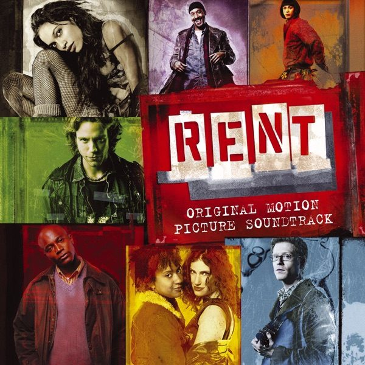
Seasons of Love
뮤지컬 〈RENT〉
Rent (Original Motion Picture Soundtrack) · 2005
“Measure you life in Love ♫”
▶ 이 곡 들으며 읽기TRACK 03
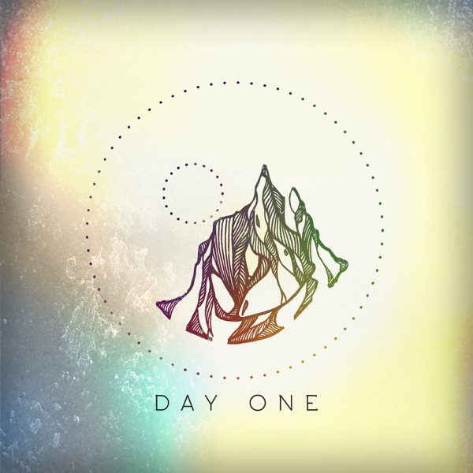
Keeper
Ben Laver
Day One - EP · 2018
“숲과 빙하와 하늘로 고즈넉이 비행하는 느낌”
▶ 이 곡 들으며 읽기TRACK 05
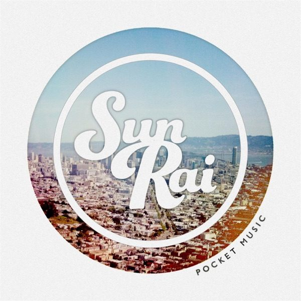
San Francisco Street
Sun Rai
Pocket Music - EP · 2013
“전자기기 알람 다섯 번보다 햇빛 한 번”
▶ 이 곡 들으며 읽기TRACK 08
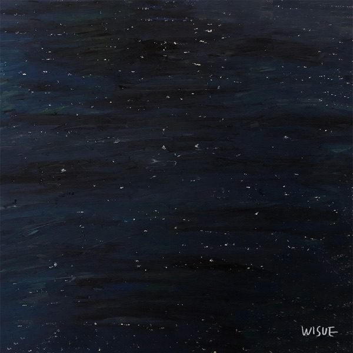
우리에게 쏟아지는 별들을
위수, 구원찬
우리에게 쏟아지는 별들을 (Feat. 구원찬) - Single · 2019
“카메라에 담기지 않는 별빛은 마음속에 그린다”
▶ 이 곡 들으며 읽기TRACK 09
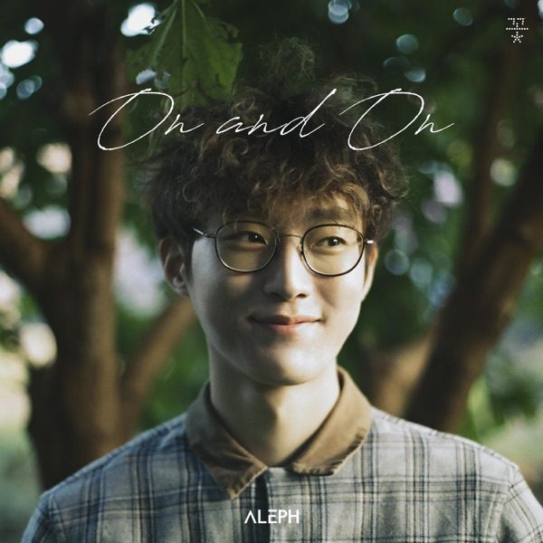
On and On
알레프(ALEPH)
On and On - Single · 2018
“삶은 멀리서 보아야 아름답다 — on and on and on~”
▶ 이 곡 들으며 읽기TRACK 10
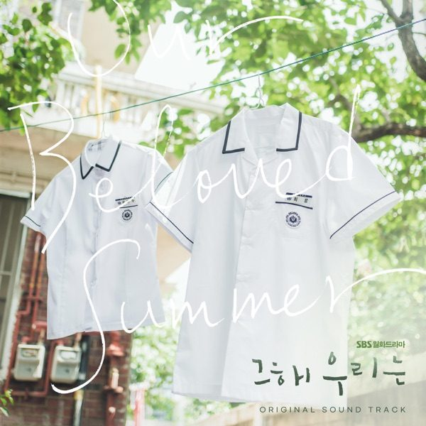
Our Beloved Summer
김경희
그 해 우리는 (Original Television Soundtrack) Special · 2022
“모든 게 영화 같았던 날”
▶ 이 곡 들으며 읽기TRACK 11
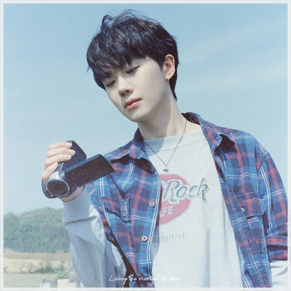
Magic
하현상
Living the Moment of Love - Single · 2022
“그때는 그때대로, 지금은 지금을”
▶ 이 곡 들으며 읽기TRACK 12
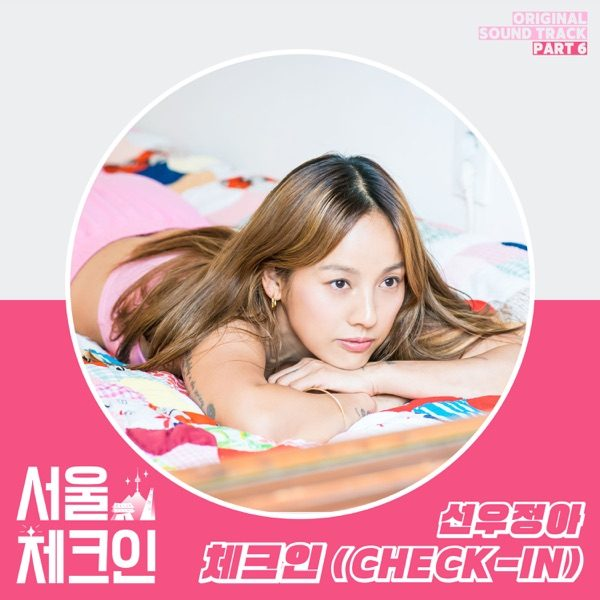
Check In
선우정아
Seoul Check-in, Pt. 6 (Original Soundtrack) - Single · 2022
“내가 있는 곳이 그냥 나이기를”
▶ 이 곡 들으며 읽기TRACK 14
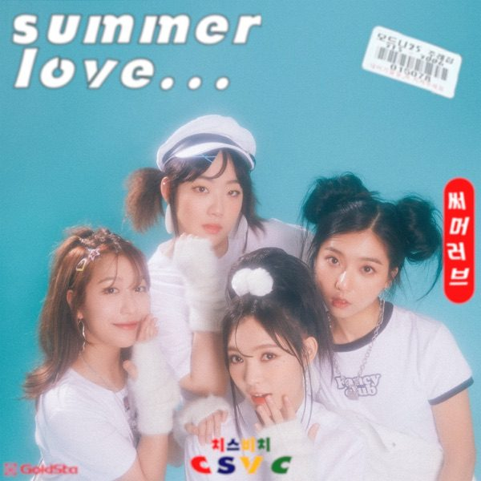
SUMMER LOVE...
치스비치
Summer Love… - Single · 2019
“겨울 옥탑에서 일부러 듣는 Summer Love”
▶ 이 곡 들으며 읽기TRACK 19
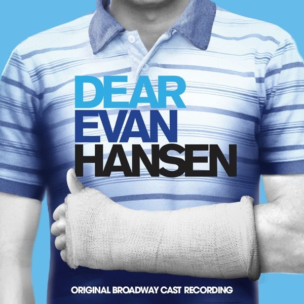
You'll Be Found
뮤지컬 〈디어 에반 핸슨〉
Dear Evan Hansen (Original Broadway Cast Recording) · 2017
“All is new, that all is new!”
▶ 이 곡 들으며 읽기TRACK 21
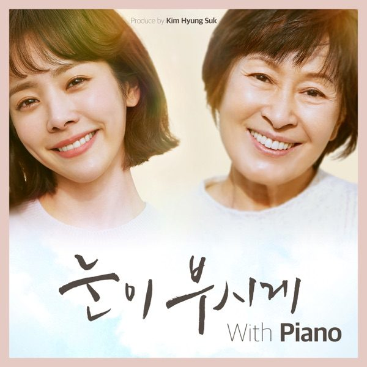
The Sense Waltz
〈눈이 부시게〉 OST
눈이 부시게 With Piano (Original Television Soundtrack) · 2019
“결국, 사랑이구나”
▶ 이 곡 들으며 읽기TRACK 22
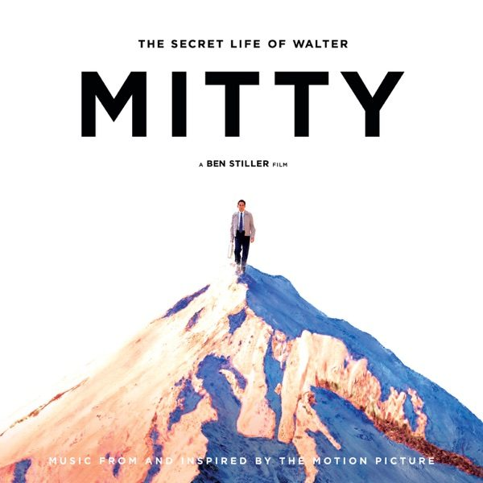
Stay Alive
José González
The Secret Life of Walter Mitty (Music From and Inspired By the Motion Picture) · 2013
“Dawn is coming — Open your eyes”
▶ 이 곡 들으며 읽기TRACK 23
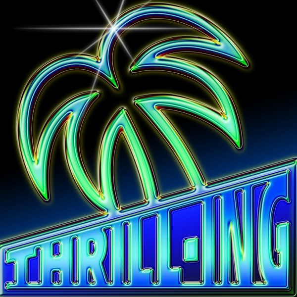
Thrill Ride
더보이즈
THE BOYZ 6TH MINI ALBUM [THRILL-ING] - EP · 2021
“입덕 초기 증상인가?”
▶ 이 곡 들으며 읽기TRACK 24
Origin of Love
MIKA
The Origin of Love · 2012
“우리는 모두 모순적인 사람들 아닐까”
▶ 이 곡 들으며 읽기TRACK 25
Steal the Show
Lauv
Steal The Show (From "Elemental") - Single · 2023
“아, 다행이다. 내 안에 사랑이 있구나”
▶ 이 곡 들으며 읽기TRACK 26
NELL 콘서트의 밤 (대표곡 Promise Me)
Separation Anxiety · 2008
“좋아하는 것은 남의 시선과 상관없이 믿고 가라”
▶ 이 곡 들으며 읽기TRACK 27
지나간 여름을 안타까워마
위수
지나간 여름을 안타까워마 - EP · 2021
“올해도 좋은 여름이었다, 이리 말할 수 있어서”
▶ 이 곡 들으며 읽기TRACK 28
Dancing in the Moonlight
Toploader
Dancing In the Moonlight - The Best of Toploader · 1999
“많고 많은 곡 중에 이 노래를 고르셨나요~”
▶ 이 곡 들으며 읽기TRACK 29
눈
Zion.T
눈 (feat. 이문세) - Single · 2017
“난 앞으로도 눈을 사랑할 테야”
▶ 이 곡 들으며 읽기TRACK 30
Moon Song
Phoebe Bridgers
Punisher · 2020
“커졌다가, 작아졌다가 — 그럴 수 있지”
▶ 이 곡 들으며 읽기TRACK 32
오르골 (Life Is Still Going On)
NCT DREAM
Hello Future - The 1st Album Repackage - EP · 2021
“파도에 잠식되기보다 올라타서 서핑하는 느낌으로”
▶ 이 곡 들으며 읽기TRACK 34
포인트 니모
윤하
YOUNHA 7th Album Repackage ‘GROWTH THEORY : Final Edition’ · 2024
“멀리 오래오래 달리고 싶다”
▶ 이 곡 들으며 읽기TRACK 37REPRISE
포인트 니모
윤하 (Reprise · 노들섬)
YOUNHA 7th Album Repackage ‘GROWTH THEORY : Final Edition’ · 2024
“사라지는 모든 것들과 사랑”
▶ 이 곡 들으며 읽기TRACK 39
Young Man
혁오 × Sunset Rollercoaster
Young Man - Single · 2024
“Go forward with no regret”
▶ 이 곡 들으며 읽기TRACK 41
For Good
뮤지컬 〈위키드〉
Wicked (Original Broadway Cast Recording) · 2003
“변하지 않는 게 있을 수 있단 걸 알려줘”
▶ 이 곡 들으며 읽기TRACK 43
우리는 같은 음악을 듣고
박소은
우리는 같은 음악을 듣고 - Single · 2021
“언젠가 이 일기를 봤을 때 또 감회가 새롭길”
▶ 이 곡 들으며 읽기TRACK 44REPRISE
오랜 친구에게
쿨 (Reprise · 융플리 작별 편지)
Cool 5 · 2000
“같이 음악 좋아하는 오랜 친구야”
▶ 이 곡 들으며 읽기B-sides
— 본문에 스쳐간 노래들
트랙이 되지 못한 채 문장 사이를 지나간 곡들.
커버를 누르면 바로 들을 수 있다.
▶ B-sides 이어 듣기
* The Volunteers는 아티스트로만, Circle of Life와 River는 흐름에 대한 은유로 언급되었다.
Torn pages
앞부분이 사라진 글들 — 시작을 잃었지만 버릴 수 없던 문장들.
ROOFDAY ISSUE 01
글·그림 — 옥상의 날 @theroofday
2022–2026의 음악 일기에서.
“Let's sit on the roof at 1 a.m.
and talk about life.”
⟲ 처음으로
 Moonlight Punch Romance
Moonlight Punch Romance